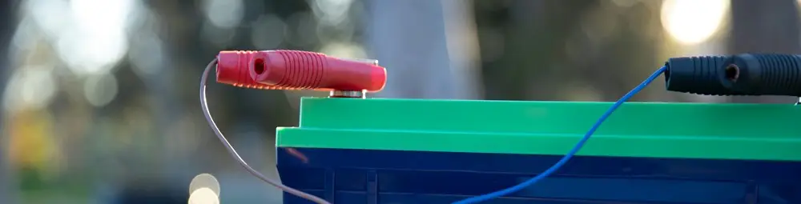

Motor Listrik Loyo Setelah Ganti Baterai? Cek dan Bersihkan Bagian Ini!
Dipublikasikan pada 31 Juli 2025

Popularitas motor listrik di Indonesia meroket, menjadi andalan banyak orang untuk mobilitas harian—mulai dari para pengemudi ojek online (ojol) hingga masyarakat umum. Efisiensi dan biaya operasional yang rendah adalah daya tarik utamanya. Namun, seperti kendaraan pada umumnya, motor listrik juga punya masalahnya sendiri.
Salah satu masalah paling umum adalah menurunnya performa seiring waktu. Jarak tempuh menjadi lebih pendek dan tarikan terasa "loyo". Solusi yang paling umum adalah mengganti baterai dengan yang baru. Tapi, bagaimana jika setelah menghabiskan biaya untuk baterai baru, performa motor listrik Anda tetap tidak membaik?
Jangan panik atau buru-buru menyalahkan baterai barunya. Seringkali, masalahnya terletak pada komponen kecil yang sering terlewatkan: terminal atau skun aki yang berkarat.
Mengapa Karat pada Terminal Aki Jadi Biang Keladi?
Baterai baru Anda ibarat sumber tenaga raksasa yang siap menyuplai listrik. Namun, agar tenaga itu sampai ke dinamo motor, ia harus melewati terminal (skun) sebagai jembatannya.
Karat atau korosi pada terminal ini bersifat sebagai isolator atau penghambat listrik. Ia menciptakan resistansi (hambatan) yang tinggi pada sambungan. Akibatnya:
- Aliran Listrik Terhambat: Tenaga penuh dari baterai baru Anda tidak bisa mengalir sempurna ke sistem kelistrikan motor.
- Energi Terbuang: Sebagian besar energi listrik akan hilang dan berubah menjadi panas pada terminal yang berkarat, bukan menjadi tenaga untuk menggerakkan motor.
- Performa Drop: Hasil akhirnya adalah motor tetap terasa loyo dan boros baterai, seolah-olah Anda tidak pernah mengganti baterainya.
Panduan Lengkap Membersihkan Terminal Aki yang Berkarat
Mengatasi masalah ini ternyata sangat mudah dan bisa dilakukan sendiri di rumah. Anda hanya perlu sedikit waktu dan beberapa alat sederhana.
Alat yang Dibutuhkan:
- Cairan Pembersih Karat / Contact Cleaner: Banyak dijual di toko online atau bengkel dengan harga di bawah Rp 100.000.
- Sikat Kawat Kecil atau Sikat Gigi Bekas
- Kain Lap Bersih
- Kunci Pas/Sok untuk membuka baut terminal.
Langkah-langkah Pengerjaan:
-
Pastikan MCB Motor Mati dan Amankan Area
Langkah keamanan pertama dan terpenting. Matikan MCB motor listrik Anda dan cabut kunci. Buka kompartemen baterai untuk mengakses terminal. -
Lepaskan Konektor dan Semprot Cairan Pembersih
Gunakan kunci untuk melepas baut pada terminal (skun) yang berkarat. Semprotkan cairan pembersih karat secara merata pada bagian terminal di motor dan juga pada konektor kabelnya. Diamkan selama beberapa menit agar cairan bekerja melunakkan karat. -
Sikat dan Bersihkan Karat
Setelah didiamkan, gunakan sikat kawat kecil untuk menggosok sisa-sisa karat yang membandel hingga bersih. Lap hingga kering menggunakan kain bersih. Pastikan tidak ada sisa kotoran atau cairan. -
Pasang Kembali Konektor dengan Kencang
Ini adalah langkah krusial. Pasang kembali konektor ke terminal dan pastikan baut terpasang dengan sangat kencang. Koneksi yang kendor sama buruknya dengan koneksi yang berkarat, karena akan menciptakan celah yang juga menghambat aliran listrik.
Koneksi Sempurna = Performa Maksimal
Setelah terminal bersih dari karat dan baut terpasang rapat, jalur listrik dari baterai ke motor Anda kini kembali lancar tanpa hambatan. Anda akan langsung merasakan perbedaannya: performa motor listrik kembali responsif dan jarak tempuh kembali normal sesuai kapasitas baterai baru Anda.
Jadi, jika motor listrik Anda terasa loyo, jangan langsung menyalahkan baterai. Periksa dulu "jembatan" kecil penghubung tenaganya. Video di bawah akan menjelaskan tentang cara membersihkan karat pada konektor aki. Semoga bermanfaat!